Описание
Telegram - это один из мессенджеров, с интерфейсом API для автоматической отправки сообщений. Клиенты Telegram есть практически под все платформы. Средство связи Telegram позволяет отправлять сообщения боту телеграм. Это единственный возможный способ автоматической отправки сообщений в Telegram. Отправка сообщений напрямую пользователям в Telegram запрещена для того, чтобы было невозможно создавать спам ботов.
Для отправки сообщений в телеграм необходимо:
- Создать своего телеграм бота
- Создать группу в телеграм и включить в нее телеграм бота
- Включить в группу телеграм пользователей, которым необходимо отправлять сообщения ALEPIZ
- Настроить средство связи Telegram (указать token телеграмм бота и идентификатор созданной группы)
Ниже приведено подробное описание создания телеграм бота, получения его token, создания группы телеграм и получения ее chatID для настройки средства связи.
Описание параметров файла конфигурации config.json
- description: описание средства связи, например "Sending a message to a telegram bot"
- address: описание адреса средства связи. В случае с телеграм, адрес средства связи отсутствует. Для удобства назначения средства связи пользователям вместо адреса можно указать группу телеграм, в которую будут транслироваться сообщения
- re: регулярное выражение с помощью которого можно проверить корректность адреса для средства связи. В данном случае это "^$"
- <configID>: идентификатор конфигурации средства связи. Для одного средства связи можно сделать несколько конфигураций и в дальнейшем выбирать требуемую конфигурацию при отправке сообщения. Например, в разных конфигурациях одного и того же средства связи могут быть различные телеграм боты для отправки сообщений разным группам пользователей.
- transport: объект с параметрами для средства связи. Если значение transport не объект, а строка, то она будет интерпретирована как ссылка на идентификатор конфигурации, из которого необходимо взять параметры средства связи.
- message: объект, который служит в качестве шаблона сообщения для средства связи. Параметр message может отсутствовать.
- token:
- token телеграм бота, которому будут отправляться сообщения - chaiID:
- идентификатор группы телеграм, в которую будут отправляться сообщения - localAddress:
- если указан, то подключение будет осуществляться с указанного IP адреса - proxyHost:
- имя хоста HTTP прокси. Если не указан, то прокси не используется - proxyPort: <0-65536> - TCP порт HTTP прокси
- proxyUser:
- пользователь для авторизации на HTTP прокси сервере. Поддерживается Basic авторизация. Если не указан, авторизация не осуществляется - proxyPass:
- пароль для авторизации на HTTP прокси сервере - text: шаблон текста сообщения. Может содержать переменную %:MESSAGE:%, которая будет заменена на содержание отправленного из ALEPIZ сообщения.
Описание transport
Описание message
Пример конфигурации
{
"description": "Sending a message to a telegram bot",
"address": "@Alepiz monitoring",
"re": "^$",
"default": {
"transport": {
"token": "1234567890:ABC-Ab1_ab1Cde2fGHi3jqR_abcdE1fgH",
"chatID": "-123456789",
"localAddress": "1.2.3.4",
"proxyHost": "proxy.my-domain.com",
"proxyPort": 3128,
"proxyUser": "proxyUserName",
"proxyPass": "proxyUserPassword"
},
"message": {
"text": "%:MESSAGE:%"
}
}
}Создание телеграм бота
Телеграм бот требуется для автоматической отправки сообщений из ALEPIZ в телеграм. Чтобы сделать своего бота, понадобится бот — @BotFather. Это официальный инструмент для создания ботов и управления ими. Найти @BotFather можно через поиск. Обратите внимание на синюю галочку рядом с именем: именно она укажет на правильный бот.
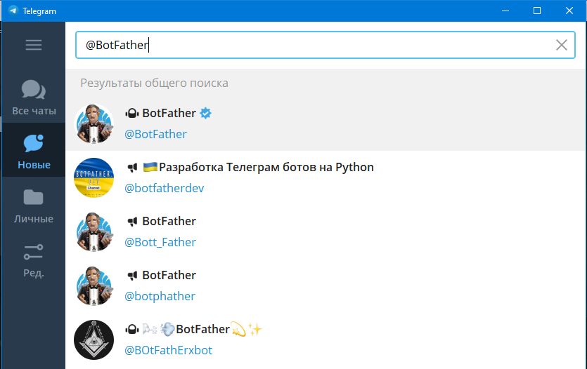Запустите диалог с ним и нажмите «Запустить».
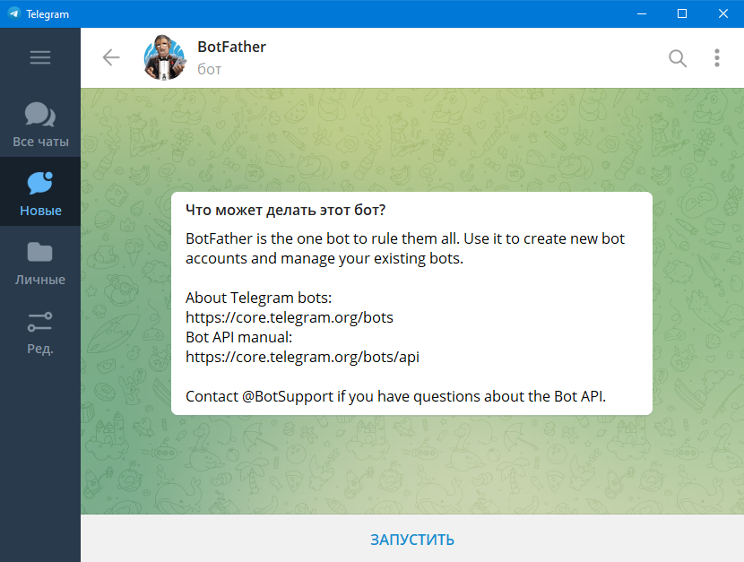Наберите /newbot
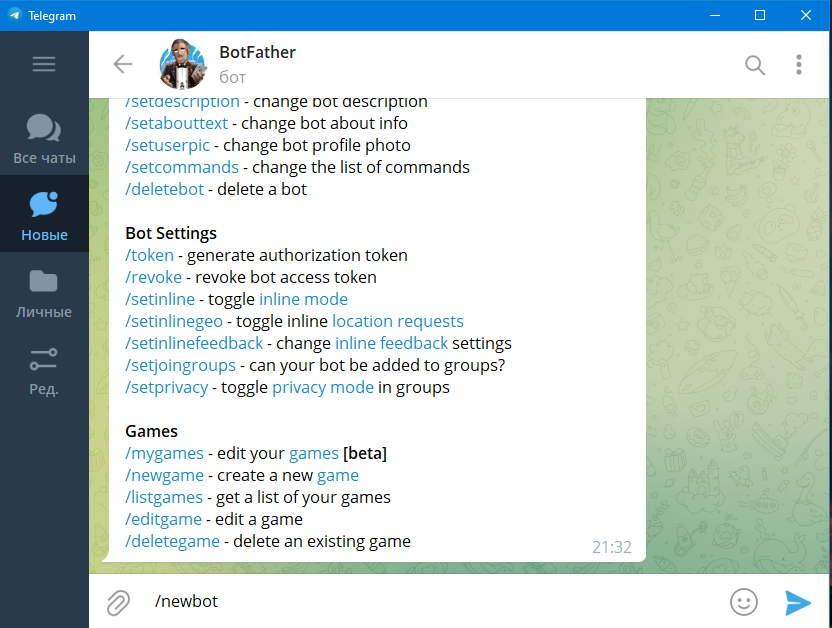Введите любое название вашего бота
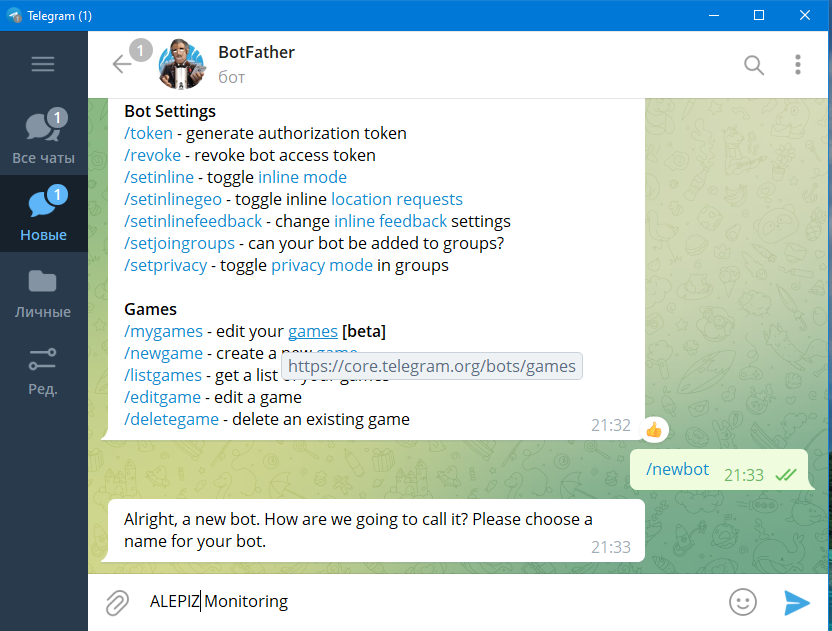Введите ник вашего бота. Он должен быть уникальным в формате <something>_bot или <Something>Bot, где <something> - буквы, цифры, тире или подчеркивание. Если что-то будет некорректно, вас попросят ввести другой ник.
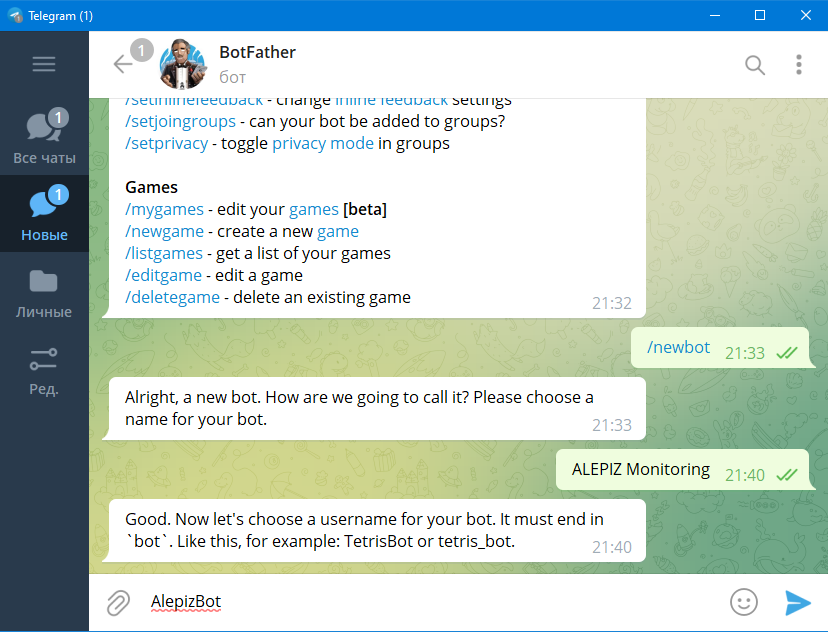Далее @BotFather предоставит ссылку на созданного бота и его token. Ссылка нужна для поиска бота, ею можно делиться. Token - это внешняя ссылка, с помощью которого осуществляется обращение к боту извне и отправка сообщения. Сохраните его в надёжном месте и никому не показывайте. На скриншоте токен был изменен.
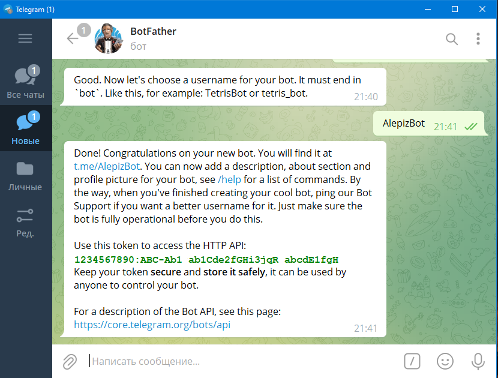После сохранения token, подключитесь к новому боту нажав на ссылку
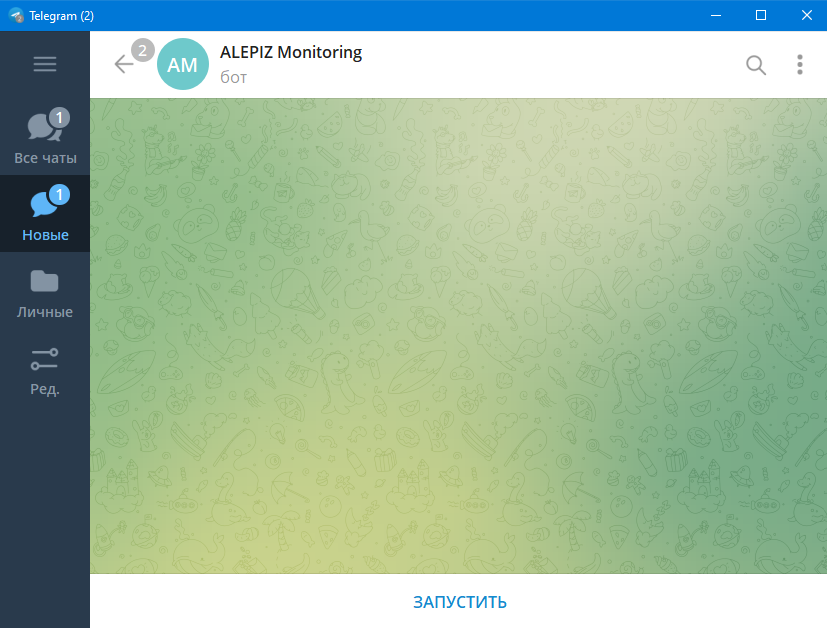Запустите новый бот
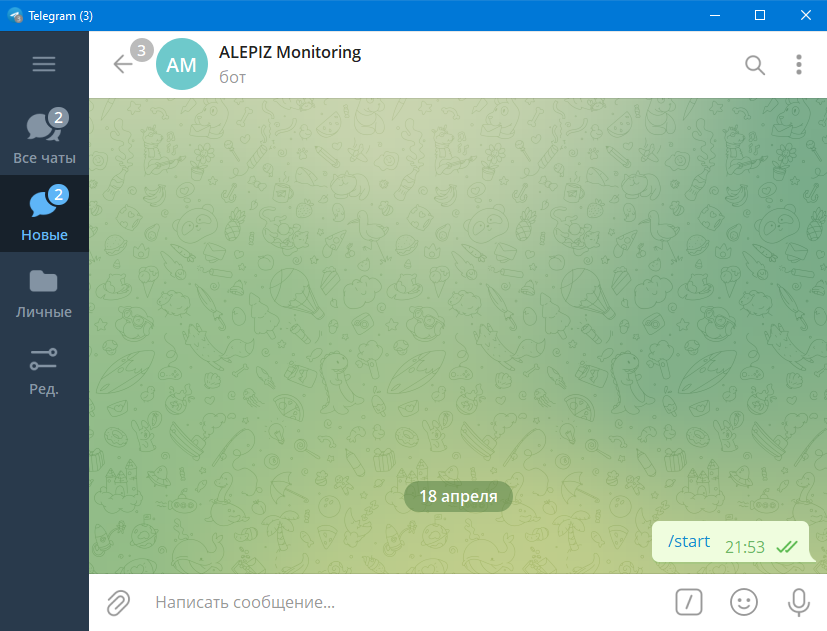Создание группы в телеграм
Группа будет использоваться для отображения сообщений, отправленных из ALEPIZ. Пользователи, включенные в группу, смогут получать сообщения. Для создания группы необходимо выполнить следующие действия:
Выберите "Создать группу" из меню телеграм
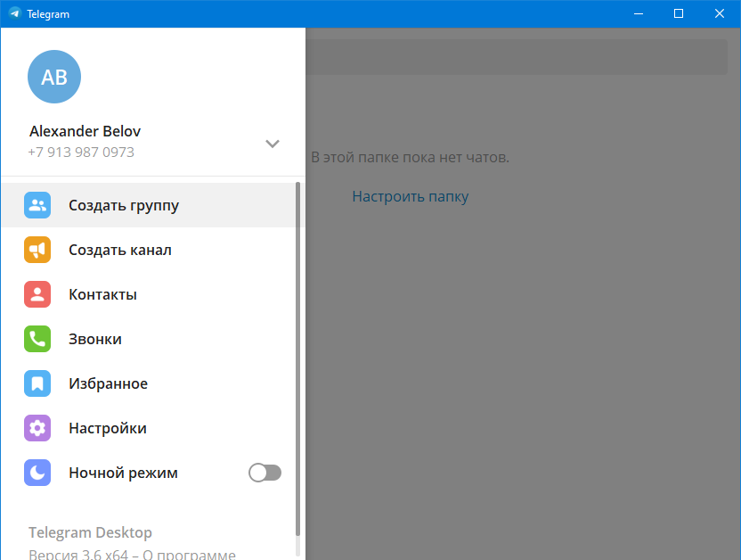Введите название новой группы
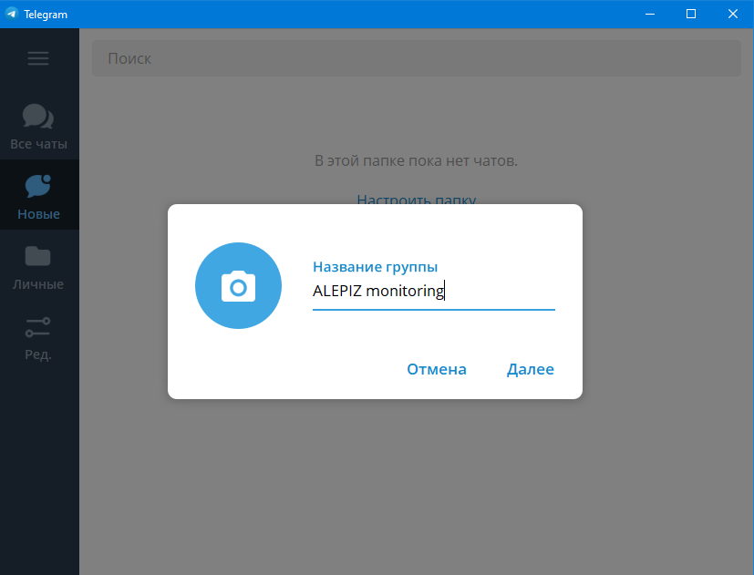Добавьте в качестве пользователя в группу созданного вами телеграм бота
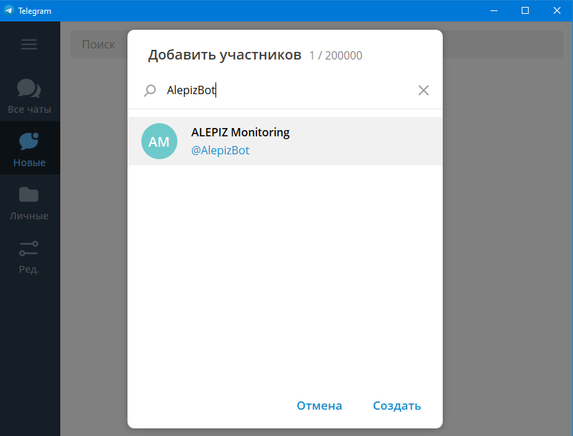Введите /join @ник_бота в созданном чате, потому что бывает, что не добавляется в логи запись о приглашении бота в группу.
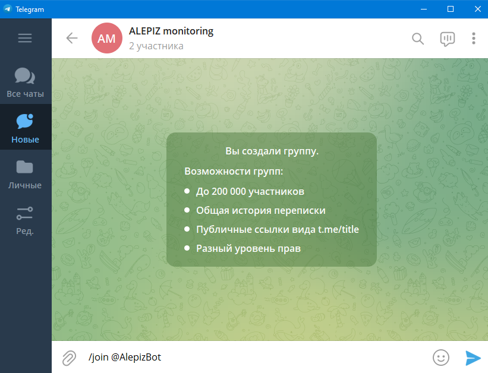Получение идентификатора созданной группы
В адресной строке браузера необходимо ввести
https://api.telegram.org/botXXXXXXXXXXXXXXXXXXXXXXX/getUpdates
где XXXXXXXXXXXXXXXXXXXXXXX - token вашего бота. Если все прошло успешно, то получим примерно следующее
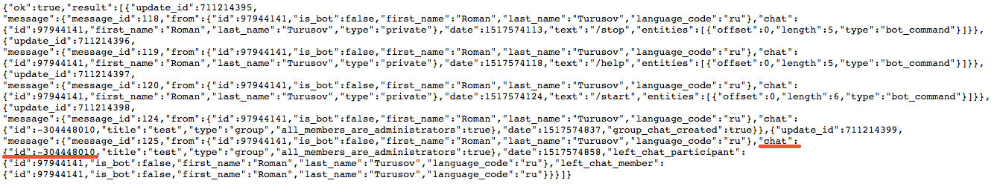Необходимо найти объект «chat»:{«id:XXXXXXXXXX…}. Обычно id группового чата начинается с минуса.
Настройка средства связи
В файл конфигурации средства связи Telegram, в transport, необходимо внести token и chatID:
{
"description": "Sending a message to a telegram bot",
"address": "@Alepiz monitoring",
"re": "^$",
"default": {
"transport": {
"token": "1234567890:ABC-Ab1_ab1Cde2fGHi3jqR_abcdE1fgH",
"chatID": "-123456789",
Проверка работы средства связи
Для проверки работы средства связи Telegram, запустите действие Development\Send message и заполните поля как на скриншоте
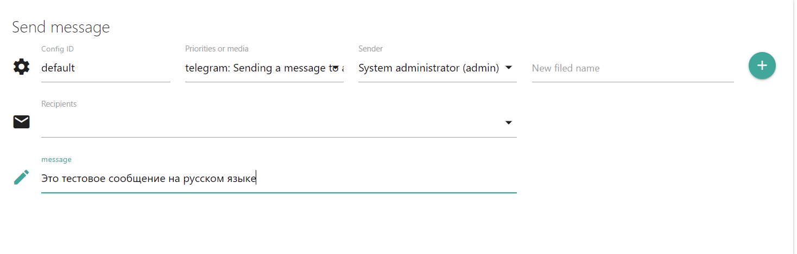Запустите действие на исполнение. В группе телеграм должно появиться отправленное вами сообщение
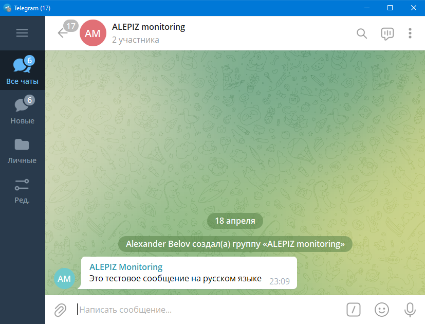